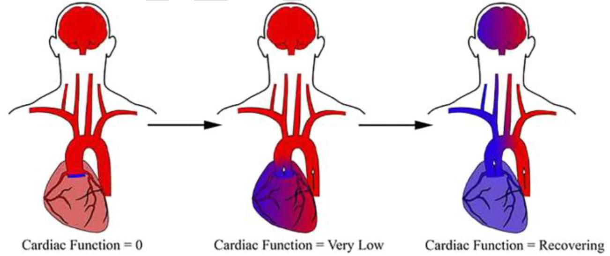

Section 5: Specific V-A ECMO Complications
Recognition and Management of VA-ECMO Specific Complications
See dedicated topic pages for comprehensive details:
Overview
As a complex intervention, a multitude of complications can occur with V-A ECMO. Many are similar to V-V ECMO and should be managed using the SOPs produced for this intervention.
Specific complications for V-A ECMO covered in this section:
- LV Distention Syndrome
- Harlequin Syndrome (Differential Hypoxia)
- Access Insufficiency
- Loss of Arterial Pulsatility
1. LV Distention Syndrome
Pathophysiology
LV distention in V-A ECMO occurs as a part of LV loading and as a combination of factors:
- The intrinsic cardiac pathology
- Reduced native cardiac function, inadequate aortic valve opening and lack of LV output
- Increased afterload - from the retrograde V-A ECMO flow and tightly squeezed arterial system. This is exacerbated if there is aortic regurgitation
Consequences
Distention leads onto raised LVEDP and LV blood stasis, causing:
- Mitral annular distention, mitral regurgitation and back pressure into the lungs - causing pulmonary congestion and worsening native gas exchange
- Worsening LV loading (a vicious cycle) leading to poor native cardiac recovery
- LV/LA electrical system disruption causing arrhythmias
- Increased risk of intra-cardiac (LV/LVOT/Aortic root) thrombus formation
- Back pressure through the RH. This causes end organ venous congestion and failure (hepatic, renal, bowel, neurological) despite adequate arterial flow
High Risk Groups
Certain aetiologies of cardiogenic shock are higher risk:
- Myocarditis
- E-CPR
- AMI with extensive myocardial damage
- Post-cardiotomy with prolonged CPB times
In high risk groups a prophylactic approach, with LV venting device insertion upfront, may be preferred.
Detection
A combination of echocardiography and clinical markers allows accurate and constant assessment. A reactive approach is acceptable – but once LV distention is recognised, this is an EMERGENCY.
1) Echocardiography
Look for:
- LVIDd >6.0cm or LVEDV/BSA >100mls/m² - or significant increase between scans
- Very severely reduced LV ejection (i.e. LVEF <10%, LVOT VTI < 5 cm)
- Aortic valve opening occurring less than every 3-4 cardiac contractions
- Greater than mild Aortic regurgitation or mild Mitral regurgitation
- Moderate to severe spontaneous LV echo contrast, or LV thrombus
Important points:
- Although absolute values are not a definitive measure, it is a good initial guide
- Serial scanning is important to detect dynamic changes from a baseline
- Even if an absolute value is not met, if there has been an increased echocardiographic dilatation, associated with a clinical suspicion of excessive LV distention, then LV unloading strategies should be further optimised
- Echocardiography is required immediately after ECMO initiation and then daily after - with further repeat studies if clinical features suggest LV distention
2) PAPs via a PAC: PADP or PCWP >18mmHg
3) SvO₂ <55%
4) Arterial pulse pressure <10mmHg
5) Worsening gas exchange in the native lung, with pulmonary oedema on CXR
6) New arrhythmias, especially ventricular
7) Worsening shock indices despite escalating V-A ECMO flows
Treatment
Is aimed at reducing LV distention and LVEDP by optimising forward flow and preventing back pressure:
Medical Management
- Reduce afterload:
- Ensure MAP 55-60 mmHg and consider reducing to 50-55 mmHg: Wean vasopressors or introduce vasodilators
- Trial of REDUCING V-A ECMO flows, but ensuring shock indices do not deteriorate
- Reduce back pressure through heart:
- Increase PEEP (15 to 25 cmH₂O) – short term therapy only
- Volume state reduction (fluid removal) if BP and venous pressures adequate
- Trial of INCREASED V-A ECMO flows. Note: Where RV systolic function is better than LV systolic function, reducing pulmonary blood flow by increased ECMO blood flow can be effective
- Increase LV contractility:
- Inotropic support for maintenance of pulsatility
- Note: inotropes may exacerbate LV distension if LV is non-responsive to inotropes by primarily increasing RV output
Mechanical LV Decompression ("LV venting")
- a) Intra-aortic balloon pump (IABP)
- Provides afterload reduction and therefore may assist patients at risk of LV distension
- However, it is NOT considered a treatment for progressive forms of LV distension that are not controlled by medical management
- b) Impella CP (percutaneous LVAD)
- Provides direct decompression of the LV
- PREFERRED option for mechanical venting
- c) Pulmonary arterial drainage via a single lumen access cannula placed in the PA
- d) Surgical options
- Trans-apical LV vent cannula
- Atrial Septostomy +/- LA vent cannula
→ For comprehensive management details, see LV Distention topic page
2. Harlequin Syndrome (Differential Hypoxia)
Pathophysiology
Blood in the descending aorta is provided retrograde from the V-A ECMO femoral arterial cannula. This is oxygenated and decarboxylated as part of the extracorporeal support.

Blood in the ascending aorta is provided anterograde from the LV. This is oxygenated and decarboxylated by the native lung function. As the native cardiac function improves, this blood typically provides perfusion to the RIGHT upper limb and the RIGHT cerebral circulation.
Blood in the aortic arch will be from a mix of the ascending aorta (native LV) and descending aorta (ECMO). As the native cardiac function improves, or if LV venting is increased, this mixing zone will move further away from the aortic valve.
Clinical Significance: Harlequin syndrome occurs when blood from the LV is not effectively oxygenated or decarboxylated by the native lungs, leading to malperfusion of the R upper limb and cerebral hemispheres.
Important: This normally indicates a recovering native cardiac function, so can be seen as a positive sign.
Detection
- Low SpO₂ on R arm probe
- Low PaO₂ / high PaCO₂ from R arm arterial line gas
- Low (<55-60%) NIRS values on R compared with left oximetry
- Poor native lung function with recovering native heart function
Treatment
- Relative hypoxia (i.e. no end organ dysfunction) can be tolerated – but a close eye must be kept on the right arm and the R sided NIRS
- Optimise ventilatory strategy to improve oxygenation of blood flowing through lungs:
- Optimal PEEP, FiO₂, Minute Ventilation, nitric oxide, proning, fluid removal
- If LVEDP estimates are LOW (i.e. unlikely pulmonary dysfunction is from LV back pressure):
- Reduce amount of cardiac output on LV venting device i.e. reduce Impella P level
- Reduce inotropic support
- Increase V-A ECMO flows
- CAUTION: Risks overdistention of LV and worsening of pulmonary congestion
- If LVEDP estimates are HIGH (i.e. likely pulmonary dysfunction is from LV back pressure):
- Increase amount of cardiac output from LV venting device i.e. increase P level on Impella
- Increase inotropic support
- Reduce V-A ECMO flows
- CAUTION: Risks worsening Harlequin syndrome if this does not improve pulmonary congestion and subsequently native lung gas exchange
- Change ECMO configuration. This should be performed in theatre/cath labs with a full team present:
- If native heart function is RECOVERED to being able to pass a V-A ECMO weaning study – move to V-V ECMO by inserting a new venous return cannula (IJ or femoral) and decannulating the arterial return
- If native heart function has NOT RECOVERED to point of passing a V-A ECMO weaning study – move to V-AV ECMO hybrid mode. Insert an additional venous return cannula (IJ likely), and connect it to the ECMO circuit with a y-connector after the blood pump and membrane oxygenator. Oxygenated blood is then delivered to both the RV and the descending aorta. A gate can be used to alter the ratio of return to RV and aorta
→ For comprehensive management details, see Harlequin Syndrome topic page
3. Access Insufficiency
Especially with smaller calibre venous access used during E-CPR, venous access insufficiency may be a common issue. V-A ECMO flows targeted at shock indices normalisation and LV unloading, rather than total cardiac output for BSA, will limit the flows required. However, if inadequate flows are being provided, then venous insufficiency will need to be addressed.
Recognition
- Chattering lines
- Venous access pressures <-100 mmHg with low ECMO flows
Management
Standard procedures should be employed, as per the V-V ECMO SOP:
- Fluid status optimization
- Intra-thoracic pressure manipulation (PEEP adjustment)
- Cannula position assessment / kinking
Advanced Management
There may be a requirement to insert a second venous access drainage cannula (IJ or femoral) and convert to a VV-A ECMO mode, if standard methods do not improve the drainage insufficiency.
4. Loss of Arterial Pulsatility
Causes
- Artefact
- Inadequate preload (e.g. excessive V-A ECMO flows, haemorrhage)
- Mechanical obstruction (e.g. tamponade, tension pneumothorax, RVOT, LVOT obstruction, pulmonary embolism)
- Note: Intrathoracic bleeding causing cardiac compression is a common cause immediately following intrathoracic surgery
- Arrhythmias
- LV failure:
- Poor LV contractility e.g. ischaemia / infarction
- Excessive afterload: typical MAP target 50-55 mmHg
- Valvular regurgitation: Aortic or Mitral regurgitation
Consequences
- Thrombosis
- Massive intracardiac thrombosis: generally lethal
- Thromboembolism with potential cerebral, limb, kidney or gut ischaemia / infarction
- Increased left ventricular filling pressure / High LV load
- Impaired coronary perfusion and further ischaemic damage to the myocardium
- Mitral regurgitation with resultant left atrial hypertension, pulmonary oedema, pulmonary capillary rupture and haemorrhage
Note: In ECPR and more severe forms of acute cardiac failure, it is common to lose pulsatility immediately after commencing V-A ECMO.
Assessment
- Artefact: check for damping of waveform and palpable peripheral pulses. Replace arterial line if required
- Arrhythmia: exclude non-perfusing rhythms
- ECMO: check flow and pump speed setting. Assess for signs of Access Insufficiency
- Exclude clinically apparent bleeding (retroperitoneal, pleural, GIT), downward trend on ABG Hb
- Tension pneumothorax: Ventilation pressures/volumes, auscultate and CXR / USS
- Tamponade: bedside Echo, measure CVP
- Pulmonary oedema: ETT (frothy secretions +/- haemorrhage) or on CXR
- Echocardiographic assessment - To include details on:
- Tamponade
- Left heart failure – LV size, function, compression / obstruction, spontaneous echo contrast (SEC or "smoke") or thrombosis
- Right heart failure – RV size, function, compression/obstruction, SEC or thrombosis
- Valves: mitral / aortic valvular regurgitation (may be continuous)
- Frequency and adequacy of aortic valve opening
Management
Management depends on the underlying cause found on assessment, and may include:
- Inadequate preload: consider volume loading (including blood / blood products)
- NOTE: LV failure with LV distention syndrome is usually associated with a "sucked down" RA and IVC. Volume loading will not correct this problem. The "need" for volume loading in V-A ECMO should always prompt a search for LV failure and bleeding
- Excessive afterload: review MAP targets and consider inodilators / vasodilators. PEEP application. Aggressive afterload control cannot be underestimated in these situations
In the absence of pulmonary oedema, with adequate systemic perfusion and MAP, managing inadequate preload and/or excessive afterload may resolve the loss of pulsatility.
- Mechanical obstruction: usually surgical management with adjunctive medical management (e.g. volume loading as temporising measure; correcting coagulopathy preoperatively in tamponade)
- Poor contractility: treat underlying cause (e.g. angiography for ischaemia) and optimize temperature, acidosis, pO₂ and pCO₂
- Arrhythmia: aim for K⁺ > 4.5 and Mg > 1 (or higher) in ventricular arrhythmias and consider amiodarone / direct current cardioversion (DCR). β blockade may be instituted after senior consultation
- RV / LV failure: consider inodilators or constrictors (e.g. milrinone, adrenaline) as dictated by MAP, with pulmonary vasodilators (e.g. iNO) if required
Important Considerations
Loss of arterial pulsatility increases the risk of LV distention syndrome and should prompt consideration of:
- LV venting device insertion if not already in-situ
- Increased anticoagulation targets, particularly in the setting of SEC or thrombus, in the context of other clinical priorities (e.g. haemostasis)
Key Points Summary
- LV distention is an EMERGENCY: Target full unloading within 2 hours
- High risk groups for LV distention: Myocarditis, E-CPR, extensive AMI, post-cardiotomy with prolonged CPB
- Echo surveillance essential: Daily minimum, PRN if concerns
- Low threshold for mechanical LV venting: Impella CP preferred option
- Harlequin syndrome often indicates recovery: Improving native cardiac output
- Right radial/brachial line mandatory: Early detection of Harlequin syndrome
- Bilateral cerebral NIRS monitoring: Target >55-60%
- Loss of pulsatility requires urgent assessment: High risk of thrombosis and poor recovery
- Maintain native cardiac output: Primary goal to prevent LV distention and thrombosis
- Arrhythmias signal LV distention: Low threshold for LV venting device
- PAC helpful for LV loading assessment: PADP or PCWP >18mmHg indicates distention
- Consider VV-A or V-AV configuration: For refractory access insufficiency or Harlequin syndrome